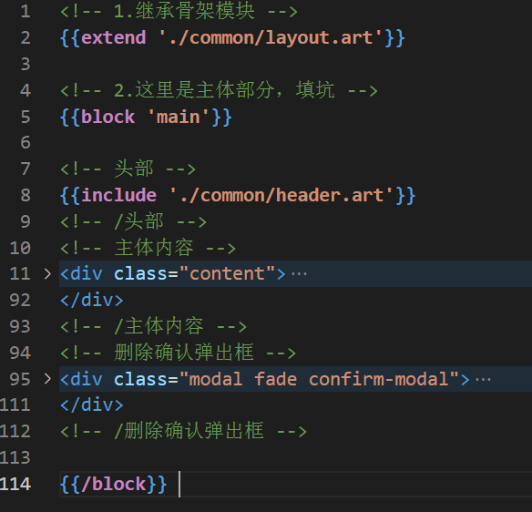
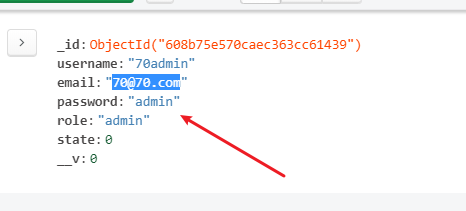
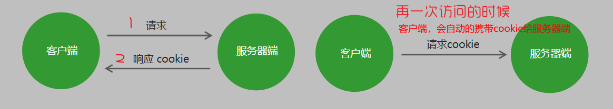
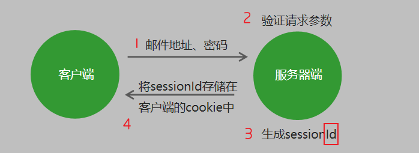
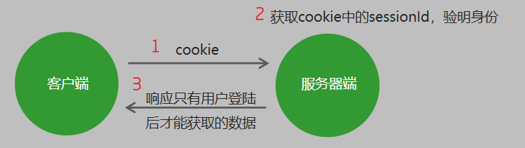
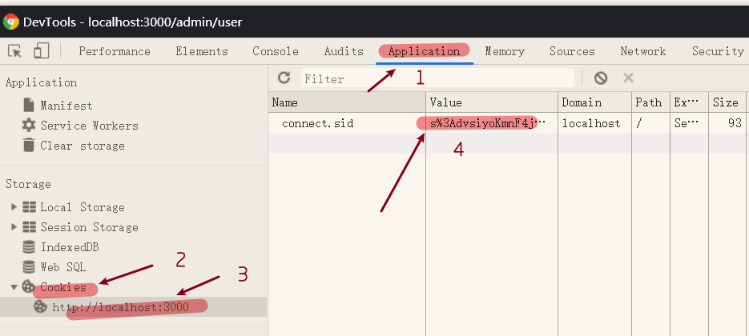
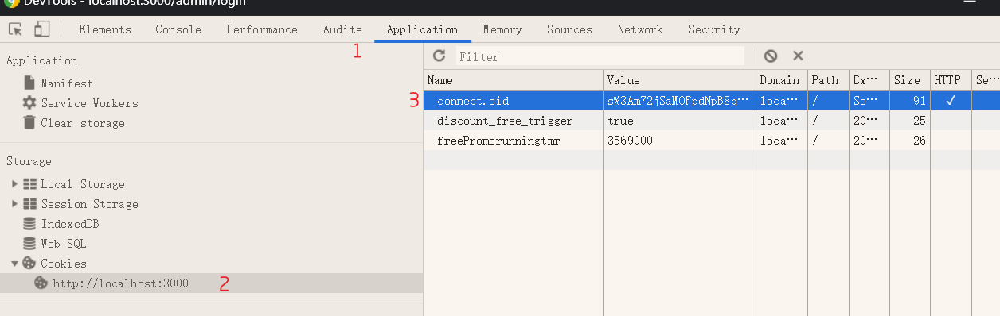
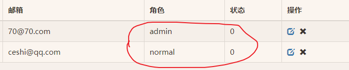
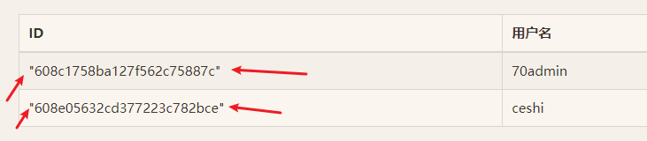

7. 博客
1.虽然是案例，但这个案例会有很多新知识点；
2.是案例驱动知识点的章节
7.1 项目环境搭建
1. 项目介绍
1.多人博客管理系统
- 博客内容展示
博客管理功能
2. 案例初始化
- 建立项目所需文件夹
- public 静态资源
model 数据库操作
route 路由
views 模板
2.初始化项目描述文件
npm init -y
3.下载项目所需第三方模块
npm install express mongoose art-template express-art-template
4.创建网站服务器
1.创建app.js；这个文件是项目的入口文件，也是项目的主文件；
2.引入express模块；创建服务器；监听端口；
5.构建模块化路由
1.在route文件下，创建home.js；admin.js；
- 1.home.js；页面路由
1
2
3
4
5
6
7
8const express = require('express');
const home = express.Router();
home.get('/', (req, res) => {
res.send('欢迎home');
});
module.exports = home;
- 2.admin.js；管理路由
1 | const express = require('express'); |
- 2.app.js那边引入；
1 | // 1.引入express模块 |
6.构建博客管理页面模板
1.要构建模板文件，需要得到页面的静态文件；
- 1.把前端的东西复制到public文件夹里面；
2.把CSS,JS那些开放出去，静态资源开放出去；
1 | // 3.开放静态资源文件 |
6.1 静态资源，直接路径就可以访问，不需要路由：http://localhost:3000/home/article.html
- 1.需要添加的路由，是public里面的文件夹与文件名；
- 2.为什么静态资源，就可以直接访问，看看之前的笔记有没有信息；
服务器端不需要处理，可以直接响应给客户端的资源就是静态资源，例如CSS、JavaScript、image文件。——15-3-3.4-5
6.2 在这里，我们不能把html当做静态文件，要与数据库的数据拼接，放到views文件里面去；
- 1.但视频说方便管理也建立home与admin文件夹；
6.3 渲染登录模板
- 1.本来render里面要写绝对路径，但这里太多了，进行设置
- 2.告诉express框架，你的模板文件放在了哪里；
6.3.1 所以，先是模板配置；
- 1.缺一步就要报错；
1 | // 4.模板配置根目录 |
6.3.2 admin.js路由配置路径；
1 | const express = require('express'); |
7.静态资源外部链接问题
0.静态资源是浏览器解析的，所以相对路径，是相对的请求路径
1.虽然css能访问到，但这是一个意外；
2.在html文件，里面有外链的css；
1 | <link rel="stylesheet" href="lib/bootstrap/css/bootstrap.min.css"> |
3.这个href里面的路径，是拼接在路由请求的第一个参数后面；
- 1.因为app.js和文件夹名都是admin，所有有效；
- 2.把app.js的路由路径改为abc就没效果了；
1 | app.use('/abc', admin); |
- 3.找不到css；
4.怎么解决？相对路径，改为，绝对路径；
4.1 怎么改成绝对路径；
1.视频说，前面加个/，就可以了；。。。
2.因为绝对路径了，就不会与路由路径拼接了；
3.与静态资源路径拼接；
4.现在静态资源路径是：
app.use(express.static(path.join(__dirname, 'public')));5.~\app.js所在的硬盘路径\public
- 1.还差一步，中间还去一个\admin；
- 2.那么就只有手写填上：
1 | <link rel="stylesheet" href="lib/bootstrap/css/bootstrap.min.css"> |
5.成功响应；
6.总结：
6.1 外链的相对路径，是相对请求路径；
6.2 为了不出问题，要用绝对路径，代替相对路径，谁是哪个绝对路径呢？就是那个/
6.3 需要把其他的相对路径，都改成这样的绝对路径；
- 1.我不想改，我把请求路径，改成文件夹名一样的！！！
- 2021-4-29 19:57:38
8. 优化模板
8.1 公共分离
1.什么叫优化模板，就是把模板的公共部分，抽到单独的文件里去
2.一旦要修改这些部分，就能一修全修；
3.先看看哪些是公共的，可以分到子模板里面去；
4.先把页面都打开，看看哪里感觉相同；
- 1.然后去找代码；
- 例如这案例里面，是头部，与侧边栏；
5.在模板文件夹里面，新建common文件夹；
- 1.创建header.art（头部模板）
- 1.把头部代码，剪切一份过去。
- 2.创建aside.art（侧边栏模板）
6.通过模板语法，拼接回来；
- 1.头部：
{{include './common/header.art'}} - 2.侧边栏：
{{include './common/aside.art'}} - 3.因为这里是模板引擎解析，解析到的路径就是文件路径，与相对路径拼接正是正确路径；
7.路由的路径，是什么算来着？
- 1.查看代码
- 2.应该也是因为配置了模板目录吧；
1 | // 4.模板配置根目录 |
- 3.不然路由这么写：
1 | // 创建后台用户列表路由 |
7.1 admin/user和模板根目录拼接，不正好；去复习一下路由；
- 1.找到了
- 1.为了使用res.render[^16]
- 2.是res，是响应下的方法；
- 3.在方法内部，做了很多事情；
- 1.里面写模板名称。
- 2.自动拼接，模板路径，模板后缀，模板文件使用哪个模板引擎；这些不都是自己先set了吗？
- 3.然后把拼接好的结果响应给客户端
- 2.在：15.1-6.3-7；2021-4-29 21:06:02
8.2 骨架分离
https://www.bilibili.com/video/BV1j5411K7EH?p=100&spm_id_from=pageDriver
2021-4-29 21:09:58
1.接下来，我们要把admin下面的模板文件的骨架分离出来；
- 1.在common文件夹下，创建，layout[^2].art文件；
2.因为他这里link的css，和，使用的js，一样，所以这些地方，没有个性化配置；
1 |
|
- 1.把body外面的基本分离了，加了body里面链接js的代码。其他都是body外面的；
3.留坑；
3.1 css需要留坑，方便自定义；JS同理；
3.2 每个页面，都有自己的主体部分，主体部分也留坑，大部分都是留坑的；
01:50
3.3 怎么留坑呢？
1.语法：
{{block '坑名'}} {{/block}}2.代码
1 |
|
4.继承；
4.1 分离了骨架，也留了坑。怎么让模板使用这些子模板？
- 1.这需要继承
4.2 我们修改user.art为例；
5.测试代码；
- 1.nodemon app.js
- 2.输入网址：http://localhost:3000/admin/user
5.1 有效，成功；
6.接着把其他模板也继承；
- 1.article-edit会有JS的填坑；
7.2 功能-登录
1. 基础登录
- 创建用户集合，初始化用户
连接数据库
创建用户集合
初始化用户 - 为登录表单项设置请求地址、请求方式以及表单项name属性
- 当用户点击登录按钮时，客户端验证用户是否填写了登录表单
- 如果其中一项没有输入，阻止表单提交
- 服务器端接收请求参数，验证用户是否填写了登录表单
6.如果其中一项没有输入，为客户端做出响应，阻止程序向下执行
根据邮箱地址查询用户信息
如果用户不存在，为客户端做出响应，阻止程序向下执行
如果用户存在，将用户名和密码进行比对
比对成功，用户登录成功
比对失败，用户登录失败
保存登录状态
密码加密处理
1.创建用户集合，初始化用户
- 连接数据库
创建用户集合
初始化用户
1.1 链接数据库
- 1.在model文件夹下面，创建connect.js
1 |
|
- 2.在项目入口文件中引入；
1 | // 5.数据库链接，因为那边没有导出什么，这边也不需要用变量接收 |
1.2 创建用户集合
- 1.unique: true可以确保数据唯一，不能重复；
- 2.
1 | // 1.引入mongoose第三方模块 |
1.3 初始化用户，不然没得登录，不对，注册一个不就行了；不过项目里面没有注册模块，虽然有添加用户页面；
1 | // 5.插入超级管理员文档 |
1.4 app.js导入user.js；
1 | // 6.导入数据库集合模板 |
1.引入后直接执行模板里面的代码
2.命令行工具那边会打印创建结果；
3.然后删除，不是在这里用，user.js要在路由那边用；
1.5 1.3也要删掉，不然每次都要创建，会报错；这些只是测试代码；
1.2 表单设置
1. 配置
1.登录表单设置
- 1.请求地址、请求方式以及表单项name属性
- 2.地方：views–login.art
1 | <form action="/login" method="POST"> |
1.1 action=”/login”，为啥？
1.这里是输入url；点击提交后，网站网址为：http://localhost:3000/login
2.目前没有这个路由，所以是找不到的；
3.action里面的路径，写的是绝对路径；
1.2 路径的写法

- 1.那么上面写的，和最终写的，都是相对路径里面的：下一级路径；
- 2.看来是相对于url的协议+host；（如果没有auth）
2. 获取用户提交的信息
2.当用户点击登录按钮时，客户端验证用户是否填写了登录表单
1.把登录请求先拦截，先过验证路由；
2.代码；视频里面写的是jq；oh no
视频：https://www.bilibili.com/video/BV1j5411K7EH?p=103&spm_id_from=pageDriver
06:50~
2.1 先给form加id；
2.2 然后下面加js；还以为验证是后端代码，是前端代码；
- 1.serializeArray()；可以获取表单所有控件的，返回的是数组；
- 1.比如上面是两个input，返回值应该是：
1 | (2) [{…}, {…}] |
2.3 但数组不方便，我们希望是对象；
1.而且，也不是name，value；而是键值对的方式
email: ‘123@qq.com’,password: ‘213123’
2.有没有这样的方法呢？
没有，自己实现；
3. 弄成对象
2.4 自己先写一个空对象，循环，把返回的数组里面的name的值作为键，value的值作为键的值；
1 | <script> |
1.疑问1：不过这里没有单引号；
2.1 对象里面的属性调用 : 对象.属性名 ，这个小点 . 就理解为“ 的 ”
对象里面属性的另一种调用方式 : 对象[‘属性名’]，注意方括号里面的属性必须加引号，我们后面会用
2.2 对象里面的方法调用：对象.方法名() ，注意这个方法名字后面一定加括号
1
2
3console.log(star.name) // 调用名字属性
console.log(star['name']) // 调用名字属性
star.sayHi(); // 调用 sayHi 方法,注意，一定不要忘记带后面的括号2.疑问2：item为什么是每一次循环的返回结果；
1.forEach每次循环返回的那一个数组，作为了 实参，传到了 item上面去
2.function (item) {
// 添加对象，但是，是这样的格式吗？疑问1 result[item.name] = item.value; });3.直接写在forEach()的小括号里面，那么就省略了调用形参里面的函数；
4.等于函数本身就有调用回调函数；
5.那么关键点就是，回调函数的实参是什么？形参是item；
从结论来看，实参是 forEach每次循环返回的那一个数组
- 笔记：15-3-3.4-8.3
2.5 在一个项目中，对表单数据处理，非常正常。
- 1.我们要把这个方法变成公共方法；
- 2.写入public,创建common.js；
https://www.bilibili.com/video/BV1j5411K7EH?p=103&spm_id_from=pageDriver
18:05~
- 3.在login.art引入这个js
<script src="/admin/js/common.js"></script>
- 4.验证代码是否有问题：http://localhost:3000/admin/login
- 1.输入数据，看console，打印出数据的对象没；
- 有，成功；
2.5.1 还是tm的放在了layout里面了；
4. 验证数据
1.如果长度大于0，就输入了地址，但要排除空格；
https://www.bilibili.com/video/BV1j5411K7EH?p=103&spm_id_from=pageDriver
20:38
2.trim()，可以去除空格；trim[^3]
4.如果其中一项没有输入，阻止表单提交
5.服务器端接收请求参数，验证用户是否填写了登录表单
6.如果其中一项没有输入，为客户端做出响应，阻止程序向下执行
1 | <script> |
1.3 登录路由
1.改action
<form action="/admin/login"之前是
<form action="/login"
2.写路由；
- 8-blog\route；的admin.js；里面
1 | // route\admin.js |
2.1 要在express获得post的参数，需要引入第三方模块，bodyPaser
1 | // app.js |
2.2 处理post参数，变成对象格式；
1 | // app.js |
2.3 接收请求参数
1 | // route\admin.js |
2.4 上面那个步骤，只是测验接收到参数了没；
- 1.对象解构；
1 | // 2. 实现登录功能 |
2.5 二次验证，因为浏览器可以禁用js；后端的代码无法操作
1 | // 2. 实现登录功能 |
2.6 美化错误信息页面（可选）
- 1.在admin/common/ 创建 error.art
- 2.视频里面是单独的页面，而我，想再login.art的基础上；
2.6.1 继承能套吗？
- 1.我在login.art里面写了
{{block 'err'}}{{/block}} - 2.然后在error.art那边写：
1 | {{extend './login.art'}} |
- 3.没有效果；
2.6.2 中间，还尝试了很多办法，包含，或者直接在login.art写html;
- 1.都不行；
2.6.3 后来，我突发奇想：事先在layout，里留下err坑；
- 1.一级继承，login.art不填这个坑
- 2.二级继承，error.art可以填这个坑吗？
1 | // layout.art |
1 | // error.art |
- 3.有效果；
2.6.4 写入node笔记；
1.4 邮箱是否存在；
1.这个邮箱是用来登录使用的登录名，可以举一反三，手机号，用户名等等；
2.引入用户集合；
- 1.返回的是匿名对象，
- 2.这里用对象解构出User，不给量接收取名；
1 | // route/admin.js |
3.根据邮箱地址查询用户信息
1 | // 6.1 根据邮箱地址查询用户信息 |
3.1 在ES6语法中，如果键与值一样，可以只写一个键；
1 | // 6.1 根据邮箱地址查询用户信息 |
3.2 通过异步函数的方式，获取到异步API查询方法findOne的返回值；
- 1.用变量接收；
1 | // 2. 实现登录功能 |
3.3 如果邮箱存在，user变量类型是对象类型，不存在，为空；
- 1.根据返回值的类型判断
4.报错：一直报错；
1 | UnhandledPromiseRejectionWarning: Error [ERR_HTTP_HEADERS_SENT]: Cannot set headers after they are sent to the client |
将头发送到客户端后无法设置头
- 1.我何时发了什么头？
- 2.结果，一旦有路由过来
let a = res.status(400).send('<h4>邮件地址或密码错误</h4>' + x);
就自动触发，不需要使用就触发了；占用了响应头；
4.1 百度无果，
5.这里的笔记好像有点乱了；
1 | admin.post('/login', async (req, res) => { |
- 主要是登录实现过程中
6.无法触发邮箱不存在；
- 1.如果只填一个错误邮箱，不写密码，会被
1 | if (email.trim().length == 0 || password.trim().length == 0) { |
返回邮件地址或密码为空密码为空
- 2.于是，我注释了；不用这个了；
6.1 然后是为空的时候，密码比对出错；
1 | 从数据库中根据eamil找到的user：null |
1.第56列，是user.password；也就是说，找不到集合中的password；
2.而表单那边password null是不报错的；
3.找不到集合中的password，是因为邮箱不存在，找不到集合
4.只有邮箱存在的时候，才比对密码；
5.把这个比对，放在集合已经找到的前提下；
2. 密码加密
1.关于登录的基本逻辑，就到这里了；
2.在数据库中，以明文的形式，存储数据是不安全的。
- 1.一下就看到了密码；

3.哈希加密是单程加密方式：1234 => abcd
在加密的密码中加入随机字符串可以增加密码被破解的难度。
- 1.不能解密，只能加密；
4.看一串代码
1 | // 导入bcrypt模块 |
4.1 genSalt一看就是个方法，参数是数值参数，数值越大越复杂。
1.不知道生成多少位；
2.默认值是10，不需要修改，使用默认值就行了；
3.是异步api，返回 什么 对象来着？听不清；
4.2 bcrypt.hash('明文密码', salt);
- 1.明文密码，就是明文的密码，你要加密的密码；
- 2.这个方法就是加密，上面那个算是规则；
- 3.hash[^16]
- 4.hash方法，也是一个异步api；
2.2 代码验证
1.有很多依赖的东西：
bcrypt依赖的其他环境
1.python 2.x
2.node-gypnpm install -g node-gyp3.windows-build-tools
npm install --global --production windows-build-toolswindows-build-tools；是windows用户要安装的；
2.npm install –global –production windows-build-tools；需要一定的时间，跳过这两节课；
安装好了，再回来；
3.在route/admin.js中，引入模块
- 1.好吧，错了，在model/user.js中引入
1 | // 7.导入加密模块 |
4.把下面的5.插入超级管理员文档，注释去掉；复活；
5.创建加密函数；超级管理员文档也剪切了进去
1 | // 创建加密函数 |
2.3 比对密码
1 | // 密码比对 |
1.还是异步api；
2.方法的返回值，是一个布尔类型，true就比对成功，false比对失败；
3.这个是验证密码用的吗？
4.Equal[^6]
5.这个方法，做了三件事情：
- 1.知道加密密码里面，哪些是随机字符串；
- 2.对明文密码，进行加密；将获取的随机字符串，随机添加到密码中；
- 3.把刚加密的，明文密码；与，第二个参数，加密密码；比对；
- 4.
6.代码验证：
6.1 去admin的路由那边，找到密码比对；
6.2 还是要引入
1 | // 7.导入加密模块 |
6.3 密码加密了，以前的判断条件不行了
if (password == user.password)
6.4
1 | // 7.1 比对密码 |
3. 登录缺陷
1.登录成功后，浏览器没记住。和没登录一样；
2.代码验证
- 1.
1 | // 将用户名存储在请求对象中 |
- 2.向页面传入数据；
1 | admin.get('/user', (req, res) => { |
- 3.
3.算了，这里不笔记了
https://www.bilibili.com/video/BV1j5411K7EH?p=109&spm_id_from=pageDriver
3.2 cookie与session
https://www.bilibili.com/video/BV1j5411K7EH?p=110&spm_id_from=pageDriver
2021-4-30 23:17:12
1. 简介
1.cookie：浏览器在电脑硬盘中开辟的一块空间，主要供服务器端存储数据。
2.cookie中的数据是以域名的形式进行区分的。
3.cookie中的数据是有过期时间的，超过时间数据会被浏览器自动删除。
- 1.如果不设置过期时间，关闭浏览器的时候，cookie就会被删除；
4.cookie中的数据会随着请求被自动发送到服务器端。
- 1.请求才有；

5.session：实际上就是一个对象，存储在服务器端的内存中，在session对象中也可以存储多条数据，每一条数据都有一个sessionid做为唯一标识。
- 1.第一次请求时

- 2.再一次请求；客户端发cookie给服务器；

2. 如何使用
1.在node.js中需要借助express-session实现session[^7]功能
1.1 示例代码
1 | const session = require('express-session'); |
- secret[^8]
1.2 express-session，也是官方提供的，是中间件；
1.3 用use在所有请求之前，先处理
1.4 session方法做了什么
1.会在请求对象添加一个属性，属性名叫session，这个属性值是一个对象。
0.添加了属性后，就可以
req.session使用1.这个对象，可以在用户登录成功后，保存用户信息。
2.方法内部，在我们给session存储数据时，生成session_ID。
- 1.这个ID，是当前存储数据的，唯一标识；
3.然后将这个id，存储在客户端的cookie[^9]当中；
4.客户端，再次访问服务器端的时候，方法会拿到客户端传过来的cookie，在cookie里提取出session_ID；
5.然后根据ID，在cookie中找到用户信息。
6.此时服务器知道了，访问服务器的客户端是谁；也就真正建立了客户端与服务器的联系；
1.5 在调用session方法时，传递了一个参数secret[^8]，含义是：存储一个密钥；
- 1.这个密钥可以自定义；
- 2.用来加密cookie的信息；
- 3.加密后，value就是乱码的；

3. 在项目中添加代码
1.下载模块express-session
- 1.npm install express-session
2.导入app.js
1 | // 7.引入express-session模块，这个模块返回一个方法，我们用一个量来接收它 |
3.使用方法
- 1.配置session密匙；
1 | // 7.1 配置session |
- 2.然后去route/admin.js；在用户登录成功后，要把用户的信息，存储在session当中；
1 | if (user) { |
4.nodemon app.js运行本地服务器，打开登录页面；输入正确邮箱和密码；
- 1.在这里，会报两句提示；
1 | express-session deprecated undefined resave option; provide resave option app.js:23:9 |
- 2.翻译
express session已弃用未定义的resave选项；提供重新保存选项app.js:23:9
express session不推荐使用未定义的saveUninitialized选项；提供saveUninitialized选项app.js:23:9
- 3.获取这些属性的含义
resave:(是否允许)当客户端并行发送多个请求时，其中一个请求在另一个请求结束时对session进行修改覆盖并保存。
默认为true。但是(后续版本)有可能默认失效，所以最好手动添加。
saveUninitialized:初始化session时是否保存到存储。默认为true， 但是(后续版本)有可能默认失效，所以最好手动添加。
原文链接：https://blog.csdn.net/u012679583/article/details/50510717
引用来源：https://www.imooc.com/wenda/detail/439174
4.1 回到上面的3.1步，修改配置
1 | app.use(session({ |
4.2 登录成功后，F12；

4.3 connect.sid；是express-session设置的默认名字，value是加密的字符串，里面保存了，服务器端为客户端生成的session-id；
- 1.接下来，我们再往服务器端，发送请求的时候，这个cookie，就会被自动携带；
- 2.这个cookie就是value
- 3.然后服务器提取id，查找用户数据；为一个登录成功
4.4 视频里，接下来是验证4.3所说；
1 | admin.get('/user', (req, res) => { |
route/admin.js
1.res.render，是返回与渲染模板文件的；
4.5 需要在模板admin/user.art里，添加放置msg；
1 | <!-- 分类标题 --> |
4.6 每次修改代码保存后，服务器会重启，session当服务器重启后就会失效。
- 1.重新登录
- 2.然后去user看；
4.7 成功，没有问题；
- 1.到现在，登录的功能，才实现好；
- 2021-5-1 15:52:30
4. 登录后
4.1 跳转到用户页面
1.重定向，express的重定向怎么写？
1.1 res.redirect()方法；redirect[^10]
- 1.参数是，你要跳转的地址；
1 | if (user) { |
4.2 显示在右上角
1.右上角是公共区域；
2.去views/admin/common/header.art
1.先需要公共数据；在登录成功后
2.虽然是公共数据，但这个数据，不是一开始就有。而是登录成功后，才知道这个登录进来的用户名；
3.看起来是，私人数据。
4.但这里要在公共模板里，所以有私人数据，公共化显示。
5.所以在成功后，才生成这个数据；
1 | if (user) { |
2.1 req.app.locals.userInfo = user;
- 1.上面的app，和app.js里面的app，是一个app；
- 2.为什么?
- 3.个人猜想：
- 1.请求报文里面，一定有，向谁请求的标识。存储了向那个服务器请求的名字，app；
- 2.在创建服务器入口的app.js里面。
- 3.写了监听和路由，这样，在正确的url里面，req就能知道服务器的名字，也就是app；
- req.app = app.js里面的app；
3.去掉路由里面传入的数据，也就是8.1；因为这个数据在公共里面有了；userInfo.username;
1 | // 创建后台用户列表路由 |
msg: req.session.username,
3.1 然后去hearer.art里面，把admin改为模板语法：{{userInfo.username}}
3.2 同时，在user.art里面，以前写的{{msg}}，也可以改为userInfo.username
- 1.验证；
4.3 登录拦截
1.现在你不登录，直接输入域名admin/user
- 1.也能过去，不过是报错；
- 2.因为userInfo.username没有东西；
RuntimeError: Cannot read property 'username' of undefined
- 3.改为
{{userInfo && userInfo.username}} - 4.就不会报错了，不过也能跳转到user页面了；
1.2 我们不能让用户在没有登录的情况下，跑到某个用户的个人页面去；
- 1.如果这个请求，是admin开头的；
- 2.判断用户登录状态
- 3.如果用户是登录的，我们让请求，继续往下走；一级路由通过；
- 4.反之不往下走，一级路由拦截；重定向到登录界面；
1.3 不过，登录模板，也是在admin下面，所以要除开login，其他的是1.2那样；
1.4 明显是用中间件（视频说）
- 1.中间件，是有顺序的，从上到下；
- 2.所以，要写在一级路由上面（express的路由，也是中间件）
1.5 代码
- 1.
req.a = user.username;为空，就不是登录状态 - 2.这个重定向，是与localhost+端口；拼接的；
- 3.模板那些，有模板设置的路径；
- 4.路由那些，也是localhost+端口；二级路由会相对于一级路由的路径；
- 5.静态资源那些，也有设置静态资源根目录；
1 | // 8. 判断用户登录状态 |
2.不用重启服务器，在F12里面删除cookie，就可以重新登录了；
5. 优化
5.1 分离登录拦截
1.app.js一般不写具体的功能代码；
- 1.分离登录拦截；
2.在项目文件夹下面，创建新文件：middleware；ware[^11]
- 1.建立login_guard.js
- 2.guard[^12]
3.剪切代码
1 | (req, res, next) => { |
- 只剩：
1 | // 8. 判断用户登录状态 |
3.1 给个名字；
const guard = (req, res, next)
4.导出：module.exports = guard;
5.app.js引入；
- 1.登录拦截路由使用；
5.2 admin分离处理函数（可选）
https://www.bilibili.com/video/BV1j5411K7EH?p=114&spm_id_from=pageDriver
1.在真实的项目中，路由非常多；
2.分离路由的处理方法；路由的请求函数；
3.分离
4.分离方法和5.1一样，我觉得这么写挺好的，我不分离；
1.主要有些处理方法有模块依赖；
2.依赖模块的路由也会变化
7.3 功能-新增用户
思路：
- 为用户列表页面的新增用户按钮添加链接
- 添加一个连接对应的路由，在路由处理函数中渲染新增用户模板
3 .为新增用户表单指定请求地址、请求方式、为表单项添加name属性 - 增加实现添加用户的功能路由
- 接收到客户端传递过来的请求参数
- 对请求参数的格式进行验证
- 验证当前要注册的邮箱地址是否已经注册过
- 对密码进行加密处理
- 将用户信息添加到数据库中
10.重定向页面到用户列表页面
1.按钮设置
1.1 表单设置
1.action
- 1.在admin/user.art
<a href="user-edit.html" class="btn btn-primary new">新增用户</a>
1.1 是一个a，不是input
1.2 修改href
href="/admin/user-edit"
- 1.这里的跳转是怎样的？
- 2.先是直接是单纯的url
- 3.一级路由，admin；
- 4.二级路由，admin下的user-edit；
1.3 路由再route文件下，能获取到吗？
- 1.能
- 2.因为app.js里面有引入；
1 | const home = require("./route/home"); |
2.增加路由；
https://www.bilibili.com/video/BV1j5411K7EH?p=115&spm_id_from=pageDriver
03:20
1 | // 3.创建用户编辑页面路由 |
3.user-edit页面表单设置
<form class="form-container" action="/admin/user-edit" method="POST">
- 1.请求地址，就是这个页面的路径么
3.1 input加name；
- 1.与数据库一致，去数据库看看名字；
- 2.
3.2 注意选择栏里面，加value，因为role
1 | <select name="role" class="form-control"> |
- 1.解析：
- 1.你选普通用户，提交的是normal
- 2.你选管理员，提交的是admin；
3.3 状态这边也是这样
1 | <div class="form-group"> |
3.4 表单的提交地址，提交方式，name都设置完了；
- 1.又要去新增用户，做提交功能；
1.2 提交功能
1.admin.js路由添加
1 | // 3.1 创建用户添加路由 |
2.编写处理函数
1 | module.exports = (req, res) => { |
req.body是啥来着？
1.把post参数弄成对象类型，并在req下创建body，传给body
2.15.1-6.3.3 post参数获取
1. Joi
0.现在呢，请求参数已经接收到了。接下来，我们要对请求参数的格式，进行验证
1.因为当前表单的字段比较多；
2.代码写起来不难，但啰嗦，费时间
3.使用第三方模块Joi
4.读作：zuai，zhuai。拽
1.JavaScript对象的规则描述语言和验证器。
2.示例代码：
1 | const Joi = require('joi'); |
2.1 Joi.string()
- 1.表示类型；
2.2 alphanum()；字母or数字，字符串；下划线,@那些不行；不能特殊字符
2.3 required() ；表示必选属性；如果没有，验证不通过；
2.4 以上方法都可选；
2.5 error(new Error(‘错误信息’))
- 1.自定义错误信息，外面的error是个方法；
- 2.里面的参数，是一个Error对象，两个不一样；
2.6 [Joi.string(), Joi.number()]
- 1.数组的话，就是，都可以；
2.7 integer() ; 必须整数；
2.8 email() ；满足邮件格式；
2.9 valid()；合法值；
- 例如：valid(‘normal’,’admin’) ；valid(0,1)
3.每一个属性第一个是 数据类型方法，不同的数据类型，后面的验证规则也不一样；
4.Joi，还有很多其他规则，实际的需求，再；
5.Joi.validate({ username: 'abc', birthyear: 1994 }, schema);
- 1.是验证的
- 2.第一个参数，是被验证的数据；第二个参数，是验证的规则；
5.1 validate方法，返回的是promise对象；
- 1.可以使用异步函数的方式，使用；
6.代码：
- 1.新建joi.js
- 2.8-blog\joi.js
- 3.就在项目文件夹下面新建；
- 在项目中添加验证；
7.1 在8-blog\route\admin\2-userEditPost.js 里面；
1 | // 1.验证规则 |
7.2 验证数据；
1 | const Joi = require('joi'); |
- 1.报错：Joi.validate is not a function
- 2.网上说版本新了，不支持；
7.2.1 我下载的版本：
1 | PS F:\2-3ciyuan\11-data base-shujuk\3-lianxi\8-blog> npm install joi |
1.但是，网上有2014年，就说有这错误；2021-5-1 20:50:04
2.我想找找新方法；
7.2.2
https://stackoverflow.com/questions/64383989/typeerror-joi-validate-is-not-a-function
这里的新格式不行；
await schema.validate(req.body);
7.2.3
也不行；await schema.validateAsync(req.body);
7.2.4 卸载最新版本，下载14.3.1
- 1.卸载：
npm uninstall joi - 2.下载：
npm install joi@14.3.1
7.3 再次验证；
- 1.成功，没有问题；2021-5-1 21:03:07
8.把这个错误返回信息，弄到页面上去；
8.1 找到这个页面的get请求路由；
1 | // 3.创建用户编辑页面路由 |
8.2 在处理函数里面写
- 1.获取get请求参数，
req.query - 2.解构出message
const { message } = req.query;
- 3.传入数据
1 | module.exports = (req, res) => { |
- 4.修改模板文件
1 | <!-- 分类标题 --> |
9.over
1.3 验证邮箱
1.回到：8-blog\route\admin\2-userEditPost.js
2.在验证下面写查询：
- 1.查询，要用到用户集合的构造函数。
- 2.引入
1 | // 3.1 引入用户集合 |
- 3.视频里是这样的：
const { User } = require('../../model/user');- 1.想了想，好像是这样没错；
- 2.我试试自己的写法；
- 4.我的3是错误的；
- 5.根据邮箱地址，查询用户是否存在
1 | // 3. 根据邮箱地址，查询用户是否存在 |
- 6.如果存在，就有那个用户的对象，如果不存在就为空；
- 7.利用返回值判断；
- 8.测试
1 | // 3.2 测试 |
- 9.输入70@70.com，会返回这个文档的信息；输入其他为空；
2.1 写判断：
1 | if (user) { |
2.2 测试；
- 1.
2. 密码加密；
1.处于思路中的第八步；
- 对密码进行加密处理
2.位置：8-blog\route\admin\2-userEditPost.js
3.引入加密模块
1 | // 4. 引入加密模块 |
4.生成随机字符串.
5.加密
6.替换密码；
1 | // 4.1 生成随机字符串 |
hash[^4]，
https://www.bilibili.com/video/BV1j5411K7EH?p=118&spm_id_from=pageDriver
09:45
3. 添加到数据库
1.继续：8-blog\route\admin\2-userEditPost.js
1 | // 5.将用户信息添加到数据库中 |
2.重定向到用户列表页面
1 | // 5.1 重定向到用户列表页面 |
4. 代码优化
4.1 分离验证post参数
1.对请求参数格式验证的代码，也是处理数据的操作；
1.1 所以应该放到，专门操作数据的地方
1.2 其实就是model文件夹；
1.3 又和用户相关，所以放到user.js中；
- 8-blog\model\user.js
1.4 将验证代码，从路由中分离出来，也有利于代码==复用==，因为修改还要用
2.代码操作；
1.验证用户信息，接收从\route\admin\2-userEditPost.js分离过来的验证函数
1 | // 8.验证用户信息，接收从\route\admin\2-userEditPost.js分离过来的验证函数 |
2.剪切规则过去
3.剪切验证过去
return Joi.validate(req.body, schema);
5.
Joi.validate({ username: 'abc', birthyear: 1994 }, schema);
- 1.是验证的
- 2.第一个参数，是被验证的数据；第二个参数，是验证的规则；
1.不过，在新版本里面没有这个方法，这里用的和视频百度一直14.3.1；
2.剪切过去后，用返回。估计等会，会在2-userEditPost.js调用这里的validate_User方法
4.函数添加形参，接收提交的用户信息；
1 | // 8.验证用户信息，接收从\route\admin\2-userEditPost.js分离过来的验证函数 |
- 1.目前是怎么接收到的，我还不清楚；
- 下面6.1.2有了
5.导出方法
1 | module.exports = { |
6.在8-blog\route\admin\2-userEditPost.js，引入验证
1 | // 3.1 引入用户集合 |
6.1 给try调用
1 | module.exports = async (req, res) => { |
- 1.传入实参req.body
- 2.validate_User方法那边，形参user接收；
7.验证；成功；2021-5-2 10:12:06
4.2 错误处理
1.post参数不符合规则，邮箱已被注册；
2.express给我们了一个错误处理的中间件，让我们把错误都写在那里；
3.在：app.js；写错误处理中间件；
1 | // 10.错误处理中间件 |
4.为了使错误信息灵活，不能写死路径和错误信息；
- 1.这两个地方，应该通过参数，传递过来
5.要调用错误处理中间件，要使用next方法，说的是之前学过；
- 1.并且要为next方法，传递一个参数
- 2.在路由这里先把next加上；
1 | module.exports = async (req, res, next) => { |
5.1 发生错误的地方，调用next函数
- 1.首先在请求参数格式出错的地方
1 | module.exports = async (req, res, next) => { |
- 2.即使调用next方法，也需要停止向下运行，这里是处理错误；
return next()
3.next方法，只能传递一个参数，且是字符串类型；
- 1.现在我们需要传递两个参数
- 2.我们传递一个参数，写成对象。然后把对象转换成字符串；
- 3.使用转换方法：
JSON.stringify() - 4.方法的返回值，是，转换之后的结果；
4.一个参数，两个属性；
- 1.第一个属性是path
- 2.message
{path: '/admin/user-edit',message: err.message}5.转换成字符串给next
return next(JSON.stringify({ path: '/admin/user-edit', message: err.message }));
5.2 在express中，凡是错误里面的next，会next到错误处理中间件；
1.所以不用担心，本来next是向下传的。怎么就传到app.js里面了呢？2.是框架设置的- 3.下面6.1发现了这个假设的错误；2021-5-2 11:05:21
5.3 但字符串不好用，在app.js这里，还是转换回来
- 1.
JSON.parse() - 2.上面错误里的next的参数，是错误信息，在app.js的错误中间件中，是形参err的实参；
- 3.所以，处理err
- 4.
const result = JSON.parse(err); - 5.修改重定向
1 | res.redirect(`${result.path}?message=${result.message}`); |
5.4 ${}是模板的语法，那{{}}`呢
+ 1.`${}`是ES6模板字符串的语法，`{{好像是模板引擎的}}
5.5 测试，成功；2021-5-2 10:54:06
6.把邮箱已注册的重定向也修改了；
1 | // 3. 根据邮箱地址，查询用户是否存在 |
6.1 我在上面5.2做出了假设：在express中，凡是错误里面的next
- 1.是错误的；因为这里不是报错；含义是报错，但关键字不是
- 2.所以5.2的假设是错的
6.2 新假设：8-blog\route\admin\2-userEditPost.js的调用是：
1 | // 3.1 创建用户添加路由 |
的调用；
- 2.而这个的调用，是：
app.use('/admin', admin);一级路由； - 3.所以这里的next，如同一级路由的处理函数。
- 4.而一级路由下面，正是错误处理中间件
1 | // 使用路由模块 |
6.3 验证，提交已经注册过的邮箱，看有没有错误提示；
- 1.成功；
5. 渲染用户列表
1.post参数添加给数据库后，就是显示在列表页面了；
https://www.bilibili.com/video/BV1j5411K7EH?p=120&spm_id_from=pageDriver
2.找到路由；
1 | // 创建后台用户列表路由 |
3.用对象解构，导出User方法；
3.1 查询，传递；
1 | // 9.1 引入集合模块 |
3.2 查询返回的结果是一个数组，find()方法返回的是一个数组；
3.3 去模板页面，循环；
1.8-blog\views\admin\user.art
2.代码
- 1.
$value，是当前循环时。第一次循环就是第一次，第二次循环就是第二次
- 1.
1 | <tbody> |
- 3.测试，报错：
SyntaxError: Unexpected token T in JSON at position 0 - 4.没有加
{{/each}}
3.4 优化列表里面的角色与状态

- 1.状态代码：
<td>{{$value.state == 0? '启用':'禁用'}}</td> - 2.角色不改，就这样；
3.5 去掉id的引号；

- 1.因为id，在数据库中是一个特殊的类型，obj_id类型？？？
- 2.在模板中，会对这种类型，加上引号
- 3.如何去掉引号，只需要对_id原文输出；
- 4.在模板语法的，标准语法里面：@是原文输出
- 1.代码
- 2.
<td>{{@$value._id}}</td>
6. 分页
1.当数据库中的数据非常多时，数据需要分批次显示，这时就需要用到数据分页功能。
2.分页功能核心要素：
- 当前页，用户通过点击上一页或者下一页或者页码产生，客户端通过get参数方式传递到服务器
- 总页数，根据总页数判断当前页是否为最后一页，根据判断结果做响应操作
3.问题：能给用户列表里面加一个序号吗？
- 1.现在不知道这个，赶时间，以后再说吧；2021-5-2 20:33:56
4.总页数，自己算；结果向上取进；
- 1.Math.ceil（总数据条数 / 每页显示数据条数）
1 | // 10.3 总页数 |
5.接收客户端传来的当前页参数，这个参数是自己设置；啥意思？怎么自己设置的？
- 1.每一页显示的数据条数
- 2.查询用户数据的总数
- 1.集合下的一个方法：countDocuments；计数文档
- 2.count；计数
- 3.documents[^13]
- 4.第一个参数，是查询条件；如果不设置条件，那么是无或空对象；表示，查询所有；
- 3.计算总页数；
- 4.代码；上面1~3，对应10.1~10.3
1 | module.exports = async (req, res) => { |
6.limit()，与，skip()
- 1.skip()跳过多少条数据，跳过多少条数据开始查询
- 0.第一条数据，是0
- 1.在分页中，是指定查询开始的位置；
- 2.比如，你想查询第一页的数据，开始位置就是0
- 3.第二页的数据，就要从10开始查询，第一页是0~9
- 4.客户端传递的是，当前页的页码，而不是数据开始位置；
- 1.所以，我们要把当前页，转换到数据开始的位置；
- 2.如何转换？
- 3.比如，你想查询第二页的数据；数据应该从10开始，
- 4.我们可以用当前页2，减去1，再乘以10；
- 5.结果就是页码2的开始条数；
- 1.1 数据开始查询位置=（当前页-1）* 每页显示的数据条数（这里每页显示10条数据）
- 2.limit()限制查询数量，只查询设置的数量
- 这个是从1开始的
1 | limit(2) // limit 限制查询数量 传入每页显示的数据数量 |
6.1 切换到编辑器中；
6.2 设置限制查询数量
1 | // 9.3 查询 |
- 1.每页显示10条，但能不写死，就不写死；
- 2.pagesize正是每页显示的数据条数。
6.3 页码对应的，数据查询的，开始位置
1 | // 10.4 页码对应的，数据查询的，开始位置 |
6.4 页码默认1
1 | // 10. 接收客户端传来的当前页参数，这个参数是自己设置 |
1.这个参数是自己的设置的，到底是什么意思？
1.1 自己在req.query里面添加了一个page？
1.2 回到15-node md文档中查看了req.query的返回值，确实没有page
1.3 那么，是如何自己设置的呢？
1.因为：Express框架中使用req.query即可获取GET参数，框架内部会将GET参数转换为对象并返回。
2.而在模板那边，我们自己手动设置了get参数：page
<a href="/admin/user?page=<%=i%>">{{i}}</a></li>3.
7. 分页按钮
1.路由传递数据，当前页码page，总页数total
1 | res.render('admin/user', { |
2.去模板，找分页器；
- 8-blog\views\admin\user.art
2.1 我们要让页码有多少，才显示多少个
- 1.原来模板的原始语法就是这；
- 2.为什么不使用标准语法？
- 1.因为这里的total是一个数值，不是一个对象；
- 2.为什么这么说？
- 3.查看：15.1-5.1-3.4.1
2.2 设置盒子的超链接
2.3 实现上一页，下一页可以点击；
1.第一个page，是请求参数，第二个page，才是渲染模板传递的数据；
2.上一页成功，下一页失败，变成了11
- 1.减号有隐式转换，+没有；
- 2.转换成数值page-0
2.4 不能超过总页数，第二页再点击下一页，url的page参数变成了3
- 1.判断，如果是最后一页，下一页按钮隐藏；
- 1.block会破坏样式，inline也能显示；
- 2.同理上一页；
2.5 代码
1 | <!-- 分页 --> |
7.4 修改用户
0.思路：
将要修改的用户ID传递到服务器端
建立用户信息修改功能对应的路由
接收客户端表单传递过来的请求参数
根据id查询用户信息，并将客户端传递过来的密码和数据库中的密码进行比对
如果比对失败，对客户端做出响应
如果密码对比成功，将用户信息更新到数据库中
1.添加和修改页面都是同一个模板
- 1.如何区分是修改，还是添加？
2.如果是添加，直接跳转，如果是修改，把id参数，由get传递过去；
2.1 如果是修改操作，我们还要从数据库中查询文档，并显示在页面中；
- 1.找到user.art
- 2.设置修改按钮的href
- 3.传递id
- views\admin\user.art:51
1 | <!-- 15.2-7.4-2.1.2 设置修改按钮的href --> |
3.找到路由；8-blog\route\admin\1-user-edit.js
- 1.获取到地址栏中的id参数
- route\admin\1-user-edit.js:5
- 2.如果当前传递了id，就是修改操作；否则是添加操作；
- route\admin\1-user-edit.js:8
- 3.查询当前修改的文档信息；
- route\admin\1-user-edit.js:11
- 4.引入用户集合的构造函数；
- route\admin\1-user-edit.js:2
3.1 传递给模板，已经查找到的当前修改文档的信息；
- route\admin\1-user-edit.js:16
3.2 去模板获取信息；
value="{{user.username}}"
这种格式
3.3 现在在修改的渲染模板里面，添加了user，但是添加的时候没有。
- 1.而模板里面又改了
- 2.那么添加的时候会报错；
- 3.用并且；
{{user && user.username}}- 1.判断用户存不存在；不存在，就不执行
{{user.username}} - 2.这样的写法，用了并且的短路特性；
- 3.如果左边的数据为假，右边的就不会执行；直接返回false；
- 4.密码，先不弄
- 5.看角色
- 1.角色是一个下拉框
- 2.如果是管理员，让管理员选中；反之如果是普通用户，就普通被选中；
- 3.
3.4 禁用同理；
3.5 密码等会处理；
3.6 提交地址
1.修改和添加的提交一样不一样；
2.但这里是固定的action
3.在渲染模板里面，添加新的数据link；这样能区别修改和添加的表单地址
4.回模板，在action写判断
5.修改用户名显示，添加隐藏盒子；
- 1.报错
1
2
3
4SyntaxError: Unexpected token T in JSON at position 0
at JSON.parse (<anonymous>)
at F:\2-3ciyuan\11-data base-shujuk\3-lianxi\8-blog\app.js:49:25
at module.exports (F:\2-3ciyuan\11-data base-shujuk\3-lianxi\8-blog\route\admin\1-user-edit.js:24:13)- 2.首先，错误是：anonymous不存在；
- 3.
1-user-edit.js:24:13 - 4.后面是行和列；
1
2
3
4
5
6res.render('admin/user-edit', {
message,
// 15.2-7.4-3.6·3 在渲染模板里面，添加新的数据link；
link: '/admin/user-edit',
button: '新增'
});- 5.没有东西，没有user
- 6.解决：
1
<h4 style="display: {{button == '修改' ? 'block' : 'none'}};">用户：{{user && user.username}}</h4>
4. 修改提交地址
1.找到地址
1 | // 15.2-7.4-3.6·3 在渲染模板里面，添加新的数据link； |
2.把id作为get参数，传递给服务器端，告诉服务器，我们修改的谁；
link: '/admin/user-modify?id=' + id,；
3.建立用户信息修改功能对应的路由
1 | // 15.2-7.4-4.3 建立用户信息修改功能对应的路由 |
3.1 测试
1 | module.exports = async (req, res) => { |
4.获取admin/user-edit传递过来的修改post参数
4.1 获得被修改的id
5.密码比对；
- 1.后去修改post过来的密码；
- 2.引入User集合；
5.1 根据id查询文档；
5.2 引入bcrypt
const bcrypt = require('bcrypt');
5.3 对比
- 1.第一个参数，是明文；第二个参数是 加密后的密码；
- 2.是异步方法；返回的是布尔值；
5. 对比密码
https://www.bilibili.com/video/BV1j5411K7EH?p=126&spm_id_from=pageDriver
1.判断；
1.失败后去错误处理中间件；
2.重定向到页面修改，并提示原密码错误；
3.转换成，字符串；为next参数
2.错误信息的拼接写死了；
1 | res.redirect(`${result.path}?message=${result.message}`); |
2.1 视频中，说写循环；
- 1.接收到错误信息后，转回对象类型；
- 2.对象循环用 for in
- 1.for in 循环笔记：25.1-14.4 ；
- 2.push 方法：添加元素（在数组最后一项元素的后面添加
- 3.循环后，传递给res.redirect；
- 1.数组.join：https://developer.mozilla.org/zh-CN/docs/Web/JavaScript/Reference/Global_Objects/Array/join
join()方法将一个数组（或一个类数组对象）的所有元素连接成一个字符串并返回这个字符串。如果数组只有一个项目，那么将返回该项目而不使用分隔符。
app.js
1 | // y_2.1·2 |
3.密码比对成功，我们就需要把修改过的信息，传递到数据库中；
- 1.使用的是，数据库更新方法。
- 2.第一个参数是查询条件；
- 3.第二个参数，是一个对象，是已经被修改过的用户信息；
- 4.req.body是post参数，但这里的密码，只是比对，
3.1 所以，第二个参数，我们写具体的数据；
1.先解构
2.当键值对的键与值都是一个名的时候，可以只写一个键；
4.数据更新到数据库后，我们要重定向到用户列表页面；
5.测试；
- 1.出错；没有报错；
- 2.但没有效果；
5.1 原来是没有写 await，所以获取不到返回值；
- 1.但是不报错，有点不爽；
- 2.用try/catch，试试能不能报错；
- 3.没有反应；
- 4.查看错误中间件，添加：console.log(err.message);
5.2 再次实验；还是没有打印任何报错；
- 1.先放在这里吧，下次再来；
7.5 删除用户
0.思路
在确认删除框中添加隐藏域用以存储要删除用户的ID值
为删除按钮添自定义属性用以存储要删除用户的ID值
为删除按钮添加点击事件，在点击事件处理函数中获取自定义属性中存储的ID值并将ID值存储在表单的隐藏域中
为删除表单添加提交地址以及提交方式
在服务器端建立删除功能路由
接收客户端传递过来的id参数
根据id删除用户
1.点击删除，弹出确认警示框；
2.但视频说，这个框是一个表单
2.1 要通过这个表单，把要删除的用户id传递给服务器端；
2.2 如何传递？
- 1.在表单中，写一个隐藏域
- 1.这是啥玩意？
2.3 代码了，我得先去学习一下隐藏域；
- 1.隐藏域在页面中对于用户是不可见的，在表单中插入隐藏域的目的在于收集或发送信息，以利于被处理表单的程序所使用。浏览者单击发送按钮发送表单的时候，隐藏域的信息也被一起发送到服务器
- 2.个人理解：看不到的input；
2.4 代码：添加隐藏域；
- 1.首先找到位置，在用户列表页面；
2.5 接下来，找到删除案例；我们要把当前用户的id，作为自定义属性，存储在删除按钮上；
1.data-id=“” ；是自定义属性，这就自定义了？
2.F12看html，可以看里面有没有id；
3.有
4.然我想想，为什么？
- 1.是路由那边
- 2.路由那边，渲染模板的时候，传过来了集合
user: users - 3.然后这个按钮，在each user；
- 4.所以
@$value._id能接收到；
2.6 给删除按钮，添加点击事件，在点击事件里面，要获取id值；
- 1.给删除按钮添加一个类名，delete
- 2.在下面填js的坑；
- 3.获取用户id；
- 1.
.attr是什么的属性；
- 1.
- 4.获取失败，上面的自定义写错了，写成了date，改为data
2.7 把获取的id，存储在隐藏域中；
- 1.给隐藏域添加id属性；
<input type="hidden" name="id" id="delete_userID">
2.让这个隐藏域的值，等于获取的id；
- 1.点击的时候，会增加value属性，值是id
- 2.
3.这些是在user.art操作；
3.为删除表单添加提交地址以及提交方式
4.在服务器端建立删除功能路由
- 1.找到：8-blog\route\admin.js
- 2.添加二级路由；
admin.get('./delete', require('./admin/6-user_delete'));
- 3.
5.接收客户端传递过来的id参数
6.根据id删除用户
- 1.需要用户集合模块；引入；
- 2.当用户删除成功后，重定向会用户列表页面；
7.res.send 没有中断效果，会继续执行下面的代码；只是显示效果拦截
8.完毕
7.6 文章管理
https://www.bilibili.com/video/BV1j5411K7EH?p=129&spm_id_from=pageDriver
X. 题注
[^1]:common英 [ˈkɒmən] 美 [ˈkɑːmən] adj.常见的;通常的;普遍的;共有的;共享的;共同的;普通的;平常的;寻常的;平凡的n.公共用地;公地;(学校、大学等的)学生公共食堂
[^2]:layout英 [ˈleɪaʊt] 美 [ˈleɪaʊt] n.布局;布置;设计;安排
[^3]:trim英 [trɪm] 美 [trɪm] v.修剪;修整;切去，割掉，剪下，除去(不必要的部分);装饰，修饰，点缀(尤指某物的边缘)
n.(尤指毛发的)修剪;(衣服、家具、汽车等的)饰物，边饰，装饰配件
adj.苗条的;修长的;健康优雅的;整齐的;精心照管的;井然有序的
[^4]:hash英 [hæʃ] 美 [hæʃ] n.回锅)肉丁土豆;(尤指电话上的)#号v.反复推敲;仔细考虑;把……弄糟（乱）;斩碎;斩（肉）;剁（肉）;细切（肉）
[^5]:compare英 [kəmˈpeə(r)] 美 [kəmˈper] v.比较;对比;与…类似(或相似);表明…与…相似;将…比作n.比较
[^6]:equal英 [ˈiːkwəl] 美 [ˈiːkwəl] adj.(大小、数量、价值等)相同的，同样的;相等的;平等的;同等的;(力气、勇气、能力等)相当的;能胜任的;能应付的n.
同等的人;相等物
v.(大小、数量、价值等)与…相等，等于;比得上;敌得过;导致;结果为
[^7]:session英 [ˈseʃn] 美 [ˈseʃn] n.一场;一节;一段时间;(法庭的)开庭，开庭期;(议会等的)会议，会期;学年
[^8]:secret英 [ˈsiːkrət] 美 [ˈsiːkrət] adj.秘密的;保密的;外人不得而知的;(指行为与习惯)暗中进行的，未公开的，隐秘的;诡秘;神秘n.秘密;机密;诀窍;秘诀;奥秘;奥妙
[^9]:cookie英 [ˈkʊki] 美 [ˈkʊki] n.曲奇饼;精明强干的人;坚强的人;网络饼干(网络或互联网使用者发给中央服务器信息的计算机文件)
[^10]:redirect英 [ˌriːdəˈrekt , ˈriːdərekt] 美 [ˌriːdəˈrekt , ˈriːdərekt] v.(以新的方式或目的)重新使用;改寄;改变投递方向
[^11]:ware英 [weə(r)] 美 [wer] n.用某材料(或以某方式、在某地)制造的物品;作…用的器皿;…室的物品;(尤指小商贩在大街上或市场里出售的)物品
[^12]:guard英 [ɡɑːd] 美 [ɡɑːrd] n.卫兵;警卫员;看守;(统称)卫兵，警卫;警戒;保卫;保护v.警卫;守卫;保卫;看守;监视
[^13]:documents英 [ˈdɒkjuments] 美 [ˈdɑːkjuments] n.文件;公文;文献;证件;(计算机)文档v.记录，记载(详情);用文件证明(或证实)document的第三人称单数和复数
[^14]:limit英 [ˈlɪmɪt] 美 [ˈlɪmɪt] n.限度;限制;极限;限量;限额;(地区或地方的)境界，界限，范围v.限制;限定;限量;减量
[^15]:unique英 [juˈniːk] 美 [juˈniːk] adj.唯一的;独一无二的;独特的;罕见的;(某人、地或事物)独具的，特有的
[^16]:hash英 [hæʃ] 美 [hæʃ] n.回锅)肉丁土豆;(尤指电话上的)#号v.反复推敲;仔细考虑;把……弄糟（乱）;斩碎;斩（肉）;剁（肉）;细切（肉）